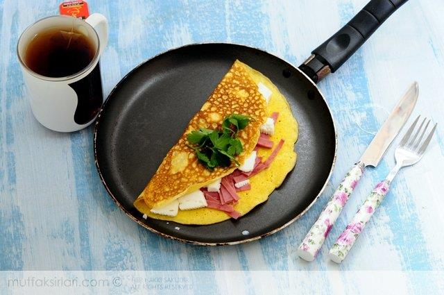

Omlet

Description
An omlet is a simple, delicious meal, best eaten either for breakfast or as a late night snack.
It's very high in protein, while still being light on calories, making it the perfect meal for and individual
looking to pack on some muscle while avoiding any weight gain side effects.
Steps to making an Omlet:
Ingredients:
- 3 eggs
- 100g of cheddar
- Sausage of choice
Recipe:
- Preheat stove top to max setting
- Crack your eggs over the pan, then
spread them around to evenly cover the entire
circumference of the pan
- Add slices of cheese and sausage on one half of your omlet
- When your Omlet looks ready (soft but held together) fold your omlet in half and toss
it onto your plate
- Enjoy!